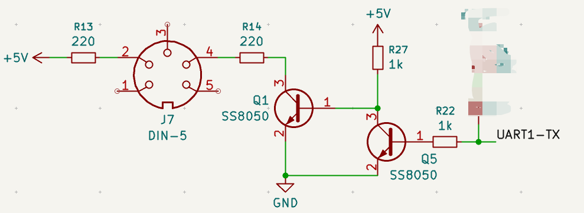

好吧，自从制作了usb-dac后，我开始喜欢WCH的单片机了（USB外设实在是简洁明了）
ch32v203c8t6这个单片机有4个uart外设，可以做4in4Out。实际上我想使用ch32v303系列的奈何淘宝买不到，这个系列有8个uart外设。
PA11 PA12的USBFSD听说是抄STM32的，很难用（确实难用那个USBLIB）
PB6 PB7的USBD才是WCH的私有USB外设
这个电路是从某个网站抄来的，我找不到链接了。它的电路输出有错误，应该是两个非操作，他只用一个NPN三极管导致输出反相了。
TX
RX
原子变量无锁环形队列(stdatomic.h)是好东西，在无RTOS上也可以在中断里使用
typedef struct RawRingBuffer {
uint8_t* buffer;
const uint32_t size_mask;
uint32_t wpos;
uint32_t rpos;
volatile uint32_t num;
void* send_pipe;
} sRawRingBuffer;
inline static void RawRingBuffer_Push(sRawRingBuffer* rb, uint8_t data) {
rb->buffer[rb->wpos] = data;
rb->wpos = (rb->wpos + 1) & rb->size_mask;
}
inline static void RawRingBuffer_PushArray(sRawRingBuffer* rb, const uint8_t* src, uint32_t len) {
while (len--) {
RawRingBuffer_Push(rb, *src++);
}
}
inline static void RawRingBuffer_Produce(sRawRingBuffer* rb, uint32_t num_items) {
rb->num += num_items;
}
inline static uint32_t RawRingBuffer_FreeSpace(sRawRingBuffer* rb) {
return rb->size_mask - rb->num;
}
inline static uint32_t RawRingBuffer_NumItems(sRawRingBuffer* rb) {
return rb->num;
}
inline static void RawRingBuffer_Consumed(sRawRingBuffer* rb, uint32_t num_items) {
uint32_t new_rpos = (rb->rpos + num_items) & rb->size_mask;
rb->rpos = new_rpos;
rb->num -= num_items;
}
inline static uint8_t RawRingBuffer_Get(sRawRingBuffer* rb, uint32_t idx) {
uint32_t i = (rb->rpos + idx) & rb->size_mask;
return rb->buffer[i];
}
给USB-RX准备4条队列，因为我只会单发单收的
给USB-TX一条即可，就算是不同jack的sysex包也能发在一起，毕竟usb包有个cable_no
给每个UART一条TX队列，一条RX队列
midi串口的波特率才31250，所以我直接用中断接收了，发送则是轮询
用这些无锁队列可以轻松的实现不同管道之间的路由
uart-tx的管道在执行sysex时应该被独占标记，否则可能被另一个连接填充错误sysex数据
usb-tx有cable-no则没有这个问题
串口midi解析推荐midixpraser库